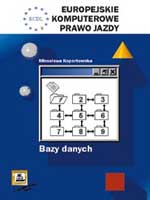

|  |
Ksi±¿ka przedstawia zasady korzystania z realcyjnych baz danych. Autorka stara³a siê opisaæ zasady tworznia baz danych i korzystanie z baz niezale¿nie od rodzaju i wersji programu. Jednak w ilustracjach oparto siê na programie Access 97, gdy¿ rozwi±zania bazodanowe s± silnie zwi±zane z konkretn± aplikacj±, za¶ Access jest obecnie najczê¶ciej stosowanym w Polsce pakietem. Uk³ad i dobór tematów jest zgodny z wymaganiami stawianymi przy egzaminie na Europejski Certyfikat Umiejêtno¶ci Komputerowych. Wszystkie zagadnienia omówiono na konkretnych przyk³adach wzbogacaj±c materia³ æwiczeniami umieszczonymi po ka¿dym fragmencie tekstu. Ksi±¿kê koñczy jeden pe³ny egzamin ECDL oraz informacja o mo¿liwo¶ci przyst±pienia do egzaminu w ró¿nych czê¶ciach Polski. |